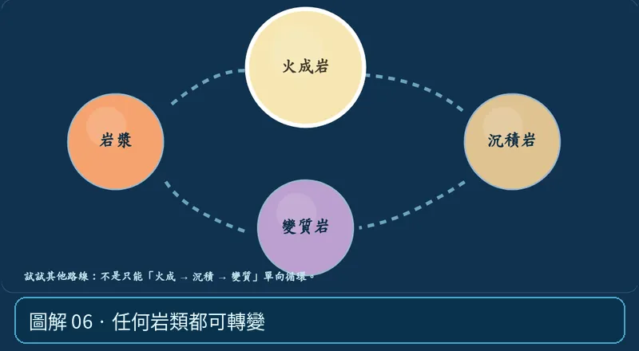

第 03 單元｜圖解 6/6｜課本 p.71–75
任何岩類都可轉變
岩石能風化變沉積物、再埋藏變質，或熔融成岩漿；不必一定依序走「火成→沉積→變質」，循環中的每個箭頭都代表一種地質作用。
① 看一眼② 操作圖③ 自己推理④ 揭開解答
🔬 這張圖，請自己動手試
操作圖上方的頁籤、滑桿或按鈕；圖片也能左右滑動放大觀看。
互動圖解 · 任何岩類都可轉變

原創 SVG 地科教學模型，方便理解，非真實比例、非即時地震資料；互動無法載入時仍有靜態圖。
STEP 01 · 先觀察
👀 眼睛先找線索
在岩石循環按「風化沉積」「高溫高壓」「熔融」「冷卻」，嘗試從同一種岩石出發走不同路線。
💡 為什麼是這樣？
岩石循環的箭頭代表地質過程，不是規定必須照一個順序輪流轉。火成岩可以先變沉積岩，也可直接變質，變質岩同樣可能熔融。
🎯 換個問法想一題
岩石一定按火成岩→沉積岩→變質岩→岩漿循環，不能跳步嗎？
我想好了，點開看答案 ↓
不對。不同作用可以改變岩石轉變路徑。
⚡ 一句記住：岩石循環不是單向